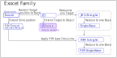
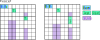
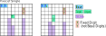
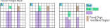

Exocetのファミリー
Exocet の Target の位置を Band に制限したのが Junior Exocet(JE)です。
JE1、Single-Base は、JE2 の Target を制限するケースです。

(1) Exocet
(Senior) Exocetでは、Target の位置の制限はありません。
このタイプが、Exocetの標準形です。SLineは、Target の Close-Line上にあります。

(2) JE2
Junior Exocetは、2つの Target を Band内 に制限するタイプです。
Targetセルの配置が筋違いのタイプと、同じ行(列)にある整列タイプがあります。
このタイプの成立条件と解析のロジックはほぼ同じであり、あまり気にしないでよいでしょう。

(3) JE1/Exocet_Single
JE1は、JE2の一方の Object が 2セルとも 非Baseの確定数字 のタイプです。
Exocet_Single は Object が Band 外にあるタイプです。
Exocet の 系統では 傍流のアルゴリズムで、特別な候補数字(wildcard)が登場します。


(4) Single Base
Single Baseは、Base が1セルのJE1です。

(5) F/M Single, Singlr_Base
CrossLineとSLineが Franke/Mutant タイプの Single, Singlr_Baseです。

(6) JE2+,JE2++
JE2の一方の Target が2セルになるタイプ(JE2+)と、両方のTargetが2セルになるタイプ(JE2++)です。
Exocet Locked 制約は、Baseの候補数字が Object(2セル) にある状態です。Cross-Line、SLineの定義は同じです。